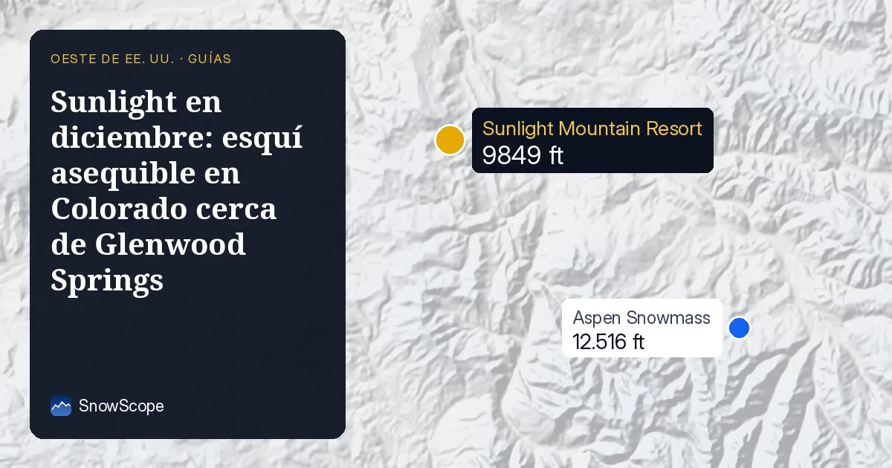

Sunlight en diciembre: esquí asequible en Colorado cerca de Glenwood Springs
Sunlight es la estación de Colorado que la gente olvida mientras hace cola en la I-70. Está sobre Glenwood Springs, sus tickets empiezan en 74 $, y forma parte del Indy Pass. La nieve de diciembre aquí es decente según nuestro historial, pero no es segura.
Consulta la previsión de nieve en tiempo real de Sunlight Mountain Resort en la app SnowScopeEspesor de nieve, alertas de nieve polvo y mapa 3D, gratis.
Lejos de las multitudes
En nuestra cartografía, Sunlight es pequeña: 3 remontes y unas 23 mi (37 km) de pistas, desde unos 8140 ft (2480 m) hasta 9850 ft (3002 m). Glenwood Springs, con sus aguas termales, es el pueblo de abajo, lo que convierte un día de esquí aquí en una combinación fácil con un baño nocturno.

Los precios, y una fecha límite
Los tickets de día único y de varios días empiezan en 74 $. La mejor oferta es el Sunny 6 Pack: seis forfaits desde 349 $, pero la oferta termina el 30 de noviembre de 2026, así que hay que comprarlo antes de que la temporada arranque de verdad.
Sunlight también está en la lista del Indy Pass. El Indy Base Pass cuesta 419 $ y el Indy+ Pass 469 $, cada uno con dos días en cada estación asociada.

Diciembre, semana a semana
La nieve duradera suele llegar a media montaña, unos 8990 ft (2741 m), a mediados de octubre. Un 1 de diciembre típico tiene allí 20 in (51 cm), el 15 de diciembre 26 in (67 cm), y el día de Navidad 31 in (80 cm).
La proporción de semanas con buena nieve a media montaña (una media semanal de 20 in, 50 cm, o más) es del 57 % en la primera semana de diciembre, 61 % en la segunda, 78 % en la tercera y 87 % en la semana de Navidad. El 15 de diciembre, el 72 % de los inviernos tuvo 20 in o más a media montaña. Un diciembre flojo dejó 13 in (34 cm): suficiente para unas pistas preparadas, no para los bosques.
Sunlight frente a Ski Cooper, Wolf Creek y Vail
Ski Cooper tiene casi la misma nieve a media montaña, 26 in (66 cm) en un 15 de diciembre típico, y un precio entre semana de 49 $ (99 $ en fin de semana y festivos). Wolf Creek tiene más nieve, 34 in (87 cm), a 96 $ en días normales y 110 $ en días punta. Vail tenía 24 in (62 cm) a media montaña en un 15 de diciembre típico según nuestros datos; no comparamos su precio.
La ventaja de Sunlight es el 6 Pack para quienes decidan pronto, y la cola corta.
El rincón honesto
La temporada temprana aquí ha bajado un poco: 29 in (74 cm) a media montaña en un 15 de diciembre típico en los primeros 15 inviernos de nuestro registro, 25 in (63 cm) en los últimos 15, y la proporción por encima de 20 in cayó del 80 % al 60 %. El invierno pasado dio 14 in (35 cm) en esa fecha. Para un viaje de diciembre, apunta a la semana antes de Navidad.
Consejos para esquiadores
- Decide antes del 30 de noviembre si quieres el 6 Pack.
- Apunta al 14-24 de diciembre, antes de las fiestas y después del riesgo de principios de diciembre.
- La carretera desde Glenwood Springs es estrecha y con curvas: se recomiendan neumáticos de nieve.
- Combina el esquí con las aguas termales el mismo día: es un trayecto corto.
Referencias y créditos
- Sunlight Mountain Resort, lift tickets (official) sunlightmtn.com/lift-tickets/
- Indy Pass, shop 2026-27 (official) www.indyskipass.com/shop
- Ski Cooper, day pass 2026-27 (official) www.skicooper.com/cooper-day-pass/
- Wolf Creek Ski Area, tickets and passes 2026-2027 (official) wolfcreekski.com/tickets-passes/
- OpenSkiMap (mapped lifts and runs) openskimap.org/
- avalanche.org, US avalanche centers and forecasts avalanche.org/
Sobre estas cifras
Cifras de nieve: histórico de nieve de SnowScope, 46 inviernos pasados (1980-81 a 2025-26) en las alturas indicadas (base, media, cima), una reconstrucción de la nieve pasada para una zona corregida por altitud (basada en ERA5-Land; Snow_Hydro 1 km para Marruecos), no los partes de la estación. Nieve actual: el mapa de SnowScope. Remontes, pistas y alturas: cartografía OpenSkiMap. Precios: las páginas oficiales listadas abajo, consultadas el 13 de noviembre de 2026; los precios dinámicos cambian con la fecha y la demanda.
Boletines oficiales de aludes: Colorado Avalanche Information Center
Citar este informe
Para investigación, docencia o prensa: cifras y gráficos reutilizables libremente bajo CC BY 4.0 con esta cita.
SnowScope (2026), Sunlight en diciembre: esquí asequible en Colorado cerca de Glenwood Springs, https://snowscope.app/blog/es/2026/11/sunlight-mountain-glenwood-springs-december-value.html, consultado el 2026-11-15
SnowScope (Atlas Labs). (2026, November 15). Sunlight en diciembre: esquí asequible en Colorado cerca de Glenwood Springs. SnowScope snow reports. https://snowscope.app/blog/es/2026/11/sunlight-mountain-glenwood-springs-december-value.html
BibTeX
@misc{snowscope2026sunlightmountainglenwood,
author = {{SnowScope (Atlas Labs)}},
title = {Sunlight en diciembre: esquí asequible en Colorado cerca de Glenwood Springs},
year = {2026},
month = nov,
howpublished = {\url{https://snowscope.app/blog/es/2026/11/sunlight-mountain-glenwood-springs-december-value.html}},
note = {Published 2026-11-15 09:34 UTC; accessed 2026-11-15}
}· CC BY 4.0 · Métodos, datos y herramientas →
Sigue Sunlight Mountain Resort
Gratis: un aviso cuando llega la nieve y la previsión cada mañana.